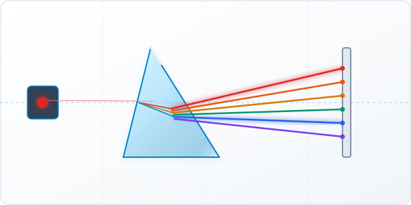
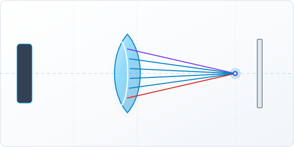
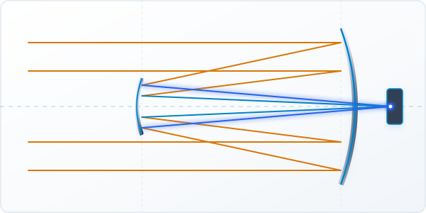
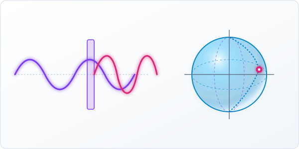
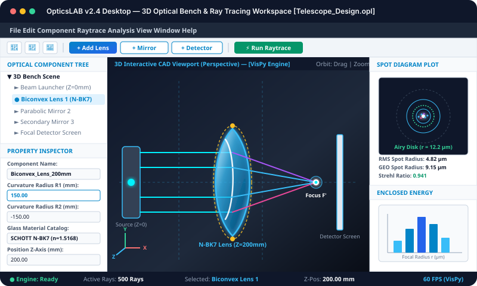
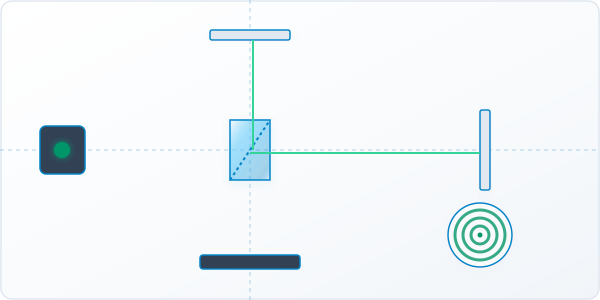

Easy Dockable Panels
Simple desktop interface with panels to add lenses, adjust properties, position light sources, and view light spot plots.
Automatic Ray Tracing
Trace light rays through glass lenses, curved mirrors, and flat screens automatically in full 3D interactive view.
Polarization 3D View
Visualize light wave direction and polarization changes clearly on an interactive 3D sphere.
Glass Material Catalog
Select standard optical glass types for realistic light bending and color focus.
Desktop Software Engine
Run OpticsLAB on Windows, Linux, or macOS with native high-performance rendering.
Project Mission
Making 3D optical design and light ray tracing simple and accessible for everyone.
Project Goal
OpticsLAB is built as a complete desktop software application to help students, researchers, and engineers design optical systems in 3D without needing programming or coding skills.
Polarization Visualizer
In addition to tracing light rays through lenses, OpticsLAB makes light wave polarization easy to understand by visualizing vector states on an interactive 3D sphere.
Project Team
The key team members building and driving OpticsLAB.
Phanindra
Project Manager
Overseeing project development, milestone planning, and team direction for OpticsLAB.
Jayant Rao
Simulation
Focusing on 3D optical ray tracing algorithms, surface geometry, and physics simulations.
Saran
Software
Developing core software architecture, 3D graphics renderer, and desktop app interfaces.
OpticsLAB Desktop Installers
Download official OpticsLAB 3D optics simulation desktop application for Windows, Linux (Ubuntu/Debian), and macOS.
Windows Installer
Official 64-bit setup wizard for Windows 10 & 11. Includes full 3D ray tracing engine and optical glass catalog.
Ubuntu Package
Native .deb package for Ubuntu, Debian, Mint, and derivative Linux distributions (64-bit).
macOS Package
Universal .dmg disk image for macOS supporting both Intel processors and Apple Silicon M1/M2/M3 chips.
Working Examples
Download ready-to-load 3D optical setup project files (.opl) to import
directly into OpticsLAB via File > Open Project.
Glass Prism Light Bending
Sample project file with a 60-degree glass prism and multi-ray light source ready for 3D dispersion simulation.

Lens Focus Setup
Sample project file focusing light rays through a convex lens onto a detector spot diagram screen.

Two-Mirror Telescope
Sample project file containing a primary parabolic mirror and secondary mirror system.

Light Wave Polarization
Sample project file configured with waveplate retarders and 3D polarization sphere tracking.

3D Optics Visual Gallery
Explore high-resolution screenshots of 3D optical ray tracing, polarization vectors, and workspace tools built with OpticsLAB. Click any image to view in detail.
Glass Prism Light Refraction
Monochromatic laser ray splitting into a multi-wavelength spectrum as it refracts through N-BK7 glass.
Lens Focal Point & Spot Diagram
Parallel ray bundle converging to a diffraction-limited focal spot on a detector screen.
Cassegrain Two-Mirror Telescope
Parabolic primary mirror and hyperbolic secondary mirror reflecting starlight to an eyepiece detector.
Poincaré Sphere Polarization Tracking
Tracking Stokes polarization state transitions through quarter-wave and half-wave retarders.

OpticsLAB Visual Workspace Panels
Interactive 3D viewport surrounded by dockable component tree, property editor, and live plot displays.

Michelson Interferometer Fringes
Beam splitting and circular interference fringe pattern generation measured at detector plane.
Video Tutorials & Feature Guides
Watch software demonstrations and learn how to build 3D optical setups, position lenses, and view polarization.
1. OpticsLAB Desktop Overview
Get a tour of the OpticsLAB desktop application interface, toolbars, optical catalog, and 3D controls.
2. Loading .opl Project Files
Learn how to open downloaded .opl project files using the File > Open Project
menu inside OpticsLAB.
Changelog & Project Updates
Simple update history for the OpticsLAB project.
- Performance: Added multi-core processing support for faster ray tracing calculations.
- Optical Designs: Added multi-surface mirror designs and specialized lens test setups.
- Detector Displays: Updated detector screens to support multiple screens simultaneously.
- Analysis Tools: Added energy distribution and ray focus analysis tools.
- Workspace Panels: Connected light source controls directly with the main components tree.
- Panels & Controls: Updated property editor, light source panel, and added workspace load/save options.
- Surfaces & Geometries: Added support for rectangular, parabolic, and custom shape surfaces.
- Materials: Integrated standard optical glass catalog for real material properties.
- Working Examples Library: Added starter
.oplproject files for prisms, lenses, mirror systems, and waveplates.
- Initial release of the 3D ray tracing engine.
- Interactive 3D rendering view and 3D wave polarization sphere.
Community & Feedback
OpticsLAB is built by the community. We welcome suggestions, bug reports, and new ideas!
Ways to Help
You can contribute to OpticsLAB easily:
- Test the app and report any bugs.
- Suggest new lens types or feature ideas.
- Share starter code examples for beginners.
- Help improve documentation and guides.
Send Feedback / Report Bug
Frequently Asked Questions
Everything you need to know about downloading, installing, and using OpticsLAB 3D optics simulation software.
General Software Questions
Features & Simulation Tools
Projects & Working Examples
.opl project files from the Working Examples section above and open them using
File > Open Project inside the OpticsLAB software window.
.opl files using
File > Save Project and reload them anytime to continue working or share with team members.